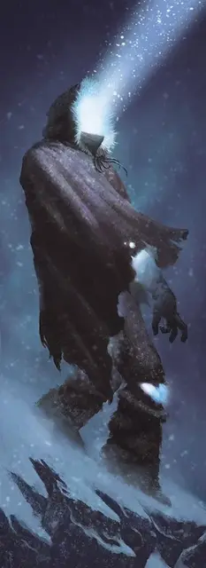

Ходок холодного сияния
Coldlight Walker
Средняя Нежить, хаотично-злая

Класс Доспеха 13 (природный доспех)
Хиты 82 (11к8 + 33)
Скорость 30 футов
| мод | спас | ||
|---|---|---|---|
| СИЛ | 15 | +2 | +2 |
| ЛОВ | 10 | +0 | +0 |
| ТЕЛ | 17 | +3 | +3 |
| мод | спас | ||
|---|---|---|---|
| ИНТ | 8 | −1 | +2 |
| МДР | 10 | +0 | +3 |
| ХАР | 8 | −1 | −1 |
Иммунитет к урону холод
Иммунитет к состояниям истощение, окаменение, ослепление, отравление, очарование, паралич
Чувства тёмное зрение 60 футов, пассивное Восприятие 10
Опасность 5 (1800 опыта)
Бонус мастерства +3
Особенности
Ослепляющий свет. Ходок излучает из себя яркий свет в пределах 20 футов и тусклый свет в пределах ещё 20 футов. Ходок может бонусным действием выбрать одно существо, находящееся в ярком свету ходока, которое он может видеть и заставить его пройти спасбросок Телосложения Сл 14. При провале цель становится ослеплённой до начала следующего хода ходока.
Ледяная погибель. Любое убитое ходоком существо замерзает на 9 дней, в течение которых его нельзя разморозить, повредить огнём, оживить и воскресить из мёртвых.
Необычная природа. Ходок не нуждается в еде, питье, сне и воздухе.
Действия
Мультиатака. Ходок совершает две атаки.
Удар. . Рукопашная атака оружием: +5 к попаданию, досягаемость 5 фт., одна цель. Попадание: 11 (2к8 + 2) дробящего урона плюс 14 (4к6) урона холодом.
Холодный луч. Дальнобойная атака заклинанием: +3 к попаданию, дистанция 60 фт., одна цель. Попадание: 25 (4к10 +3) урона холодом.
Описание
Некоторые умершие от сильного холода гуманоиды, чьи души томятся в мире смертных, становятся ходоками холодного сияния, пылающими ледяной яростью из-за бессмысленности жизни. Их обмороженные трупы излучают настолько сильный спектральный свет, что глаза смертных едва могут смотреть на них. Обычно они носят одежду в которой они умерли.
Порождённые богом ужасы. Боги, олицетворяющие зиму, создают ходоков холодного сияния, как воплощение гнева зимы . Ненавидящие жизнь души, которым было отказано в переходе в загробную жизнь, обитают теперешних обликах, напоминая живым, насколько хрупкой может быть жизнь. Когда ходок холодного сияния погибает, его свет гаснет, оставляя после себя замёрзший, лишенный жизни труп, который невозможно воскресить из мертвых.